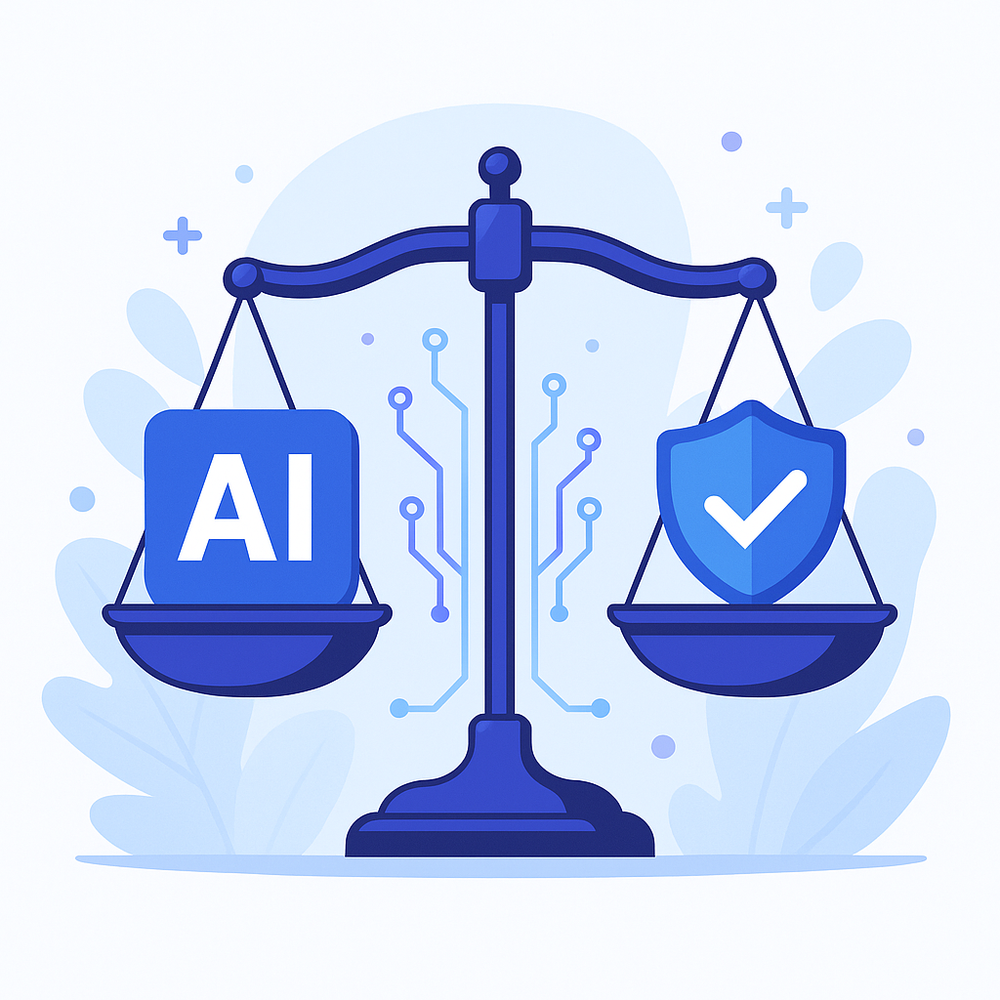

AI Ethics & Regulation in 2025
Artificial intelligence is reshaping industries, but with great power comes great responsibility. As AI systems are deployed at scale, questions of fairness, accountability and transparency become critical. Governments and organizations around the world are working to establish frameworks that ensure AI benefits society without causing harm.
Why Ethics Matter
AI models can inadvertently learn biases present in data or amplify inequities. Without oversight, algorithms may discriminate in hiring, lending or healthcare decisions. By focusing on ethical principles—such as fairness, privacy and explainability—developers can build systems that serve everyone.
The AI Act & Other Regulations
The European Union has proposed the AI Act, a comprehensive set of rules that classifies AI applications by risk and imposes obligations accordingly. High‑risk systems, like those used in law enforcement or critical infrastructure, would undergo strict testing and transparency requirements. Similar initiatives are emerging globally as policymakers aim to balance innovation with safety.
Building Responsible AI
- Transparent Models: Provide explanations for decisions and make training data sources clear.
- Inclusive Design: Engage diverse teams and stakeholders when developing AI tools.
- Continuous Monitoring: Audit models regularly to detect drift or unintended consequences.
- Ethical Frameworks: Adopt guidelines from organizations like the IEEE, OECD and governments to inform best practices.
The Road Ahead
Responsible AI isn’t a one‑time checklist but an ongoing process. As adoption increases【911144934114524†L58-L77】, strong ethical foundations will help organizations earn trust and ensure AI improves lives rather than detracting from them.